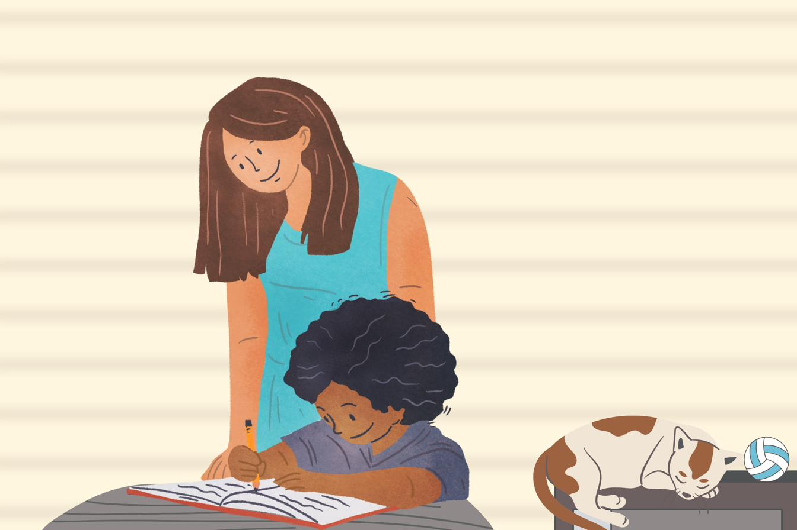

Aide aux devoirs
Un suivi régulier et bienveillant, du CP jusqu'au supérieur — pour avancer pas à pas et retrouver confiance.
- Primaire — lecture, calcul, méthodes
- Collège — 6e, 5e, 4e, toutes matières
- Lycée & supérieur (CEJM, culture générale)